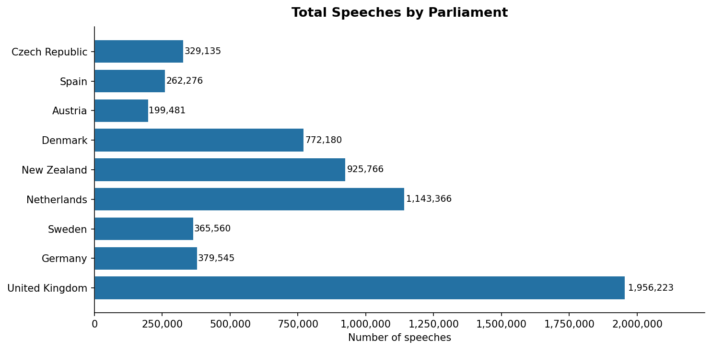
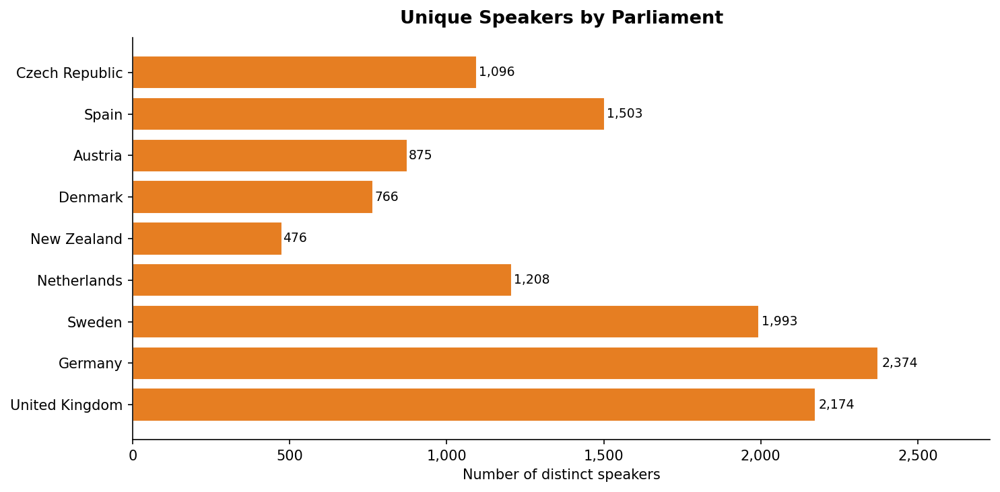
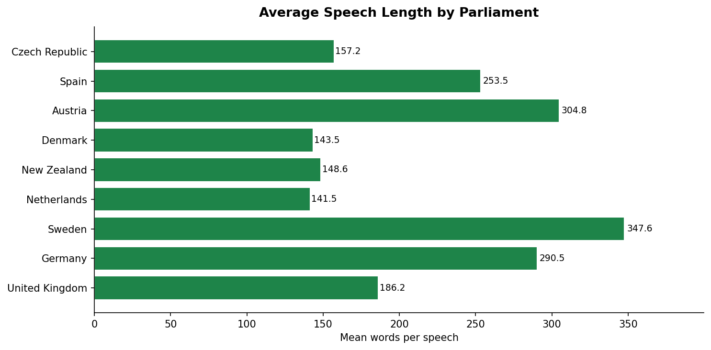
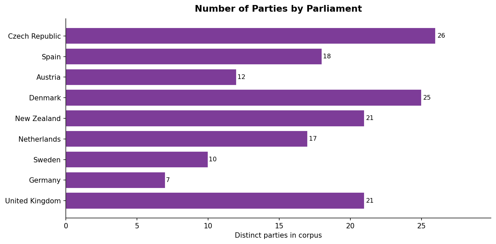

ParlSpeech V2 — Cross-Parliament Comparative Summary
Source: Rauh & Schwalbach (2020), Harvard Dataverse,
DOI: 10.7910/DVN/L4OAKN
| Generated: 2026-02-17 10:17
Summary Table
| Country |
Total Speeches |
Date Range |
Unique Speakers |
Unique Parties |
Avg Words/Speech |
Median Words/Speech |
Most Active Party |
Top Party Share (%) |
| United Kingdom |
1956223 |
1988–2019 |
2174 |
21 |
186.2 |
78.0 |
Con |
44.9 |
| Germany |
379545 |
1991–2018 |
2374 |
7 |
290.5 |
57.0 |
CDU/CSU |
25.6 |
| Sweden |
365560 |
1990–2018 |
1993 |
10 |
347.6 |
245.0 |
S |
31.7 |
| Netherlands |
1143366 |
1994–2019 |
1208 |
17 |
141.5 |
73.0 |
VVD |
14.7 |
| New Zealand |
925766 |
1987–2019 |
476 |
21 |
148.6 |
43.0 |
National |
35.6 |
| Denmark |
772180 |
1997–2018 |
766 |
25 |
143.5 |
90.0 |
S |
12.0 |
| Austria |
199481 |
1996–2018 |
875 |
12 |
304.8 |
66.0 |
SPÖ |
12.4 |
| Spain |
262276 |
1996–2018 |
1503 |
18 |
253.5 |
32.0 |
GPP |
12.4 |
| Czech Republic |
329135 |
1993–2016 |
1096 |
26 |
157.2 |
54.0 |
ODS |
29.9 |
Total Speeches by Parliament

Unique Speakers by Parliament

Average Speech Length (words) by Parliament

Number of Parties by Parliament
